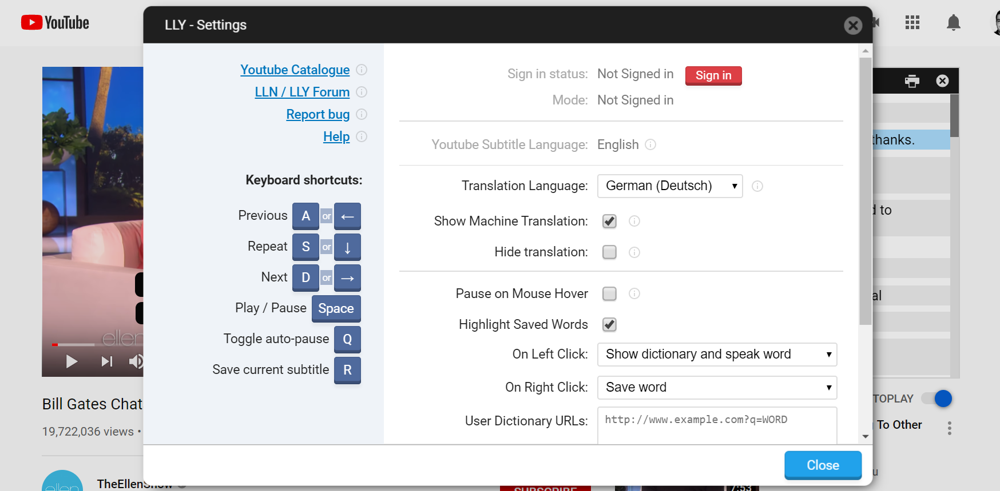

{{translate('llnTitle')}}
{{translate('selectNativeLang')}}
{{translate('success')}}
{{translate('successText1')}}
{{translate('successText2')}}
{{translate('howToFindVideos')}}
{{translate('youtubeSearch1')}}
{{translate('youtubeSearch2')}}
{{translate('youtubeSearch3')}} {{translate('youtubeSearch4')}}
{{translate('studyingWithVideo')}}
{{translate('llnKeyboardIntro')}}
- {{translate('llnKeyboard1')}}
- {{translate('llnKeyboard2')}}
- {{translate('llnKeyboard3')}}
- {{translate('llnKeyboard4')}}

{{translate('llnKeyboardOuttro')}}
{{translate('catalogue')}}
{{translate('catalogueText')}}
{{translate('moreInfo')}}
{{translate('moreInfoText')}}